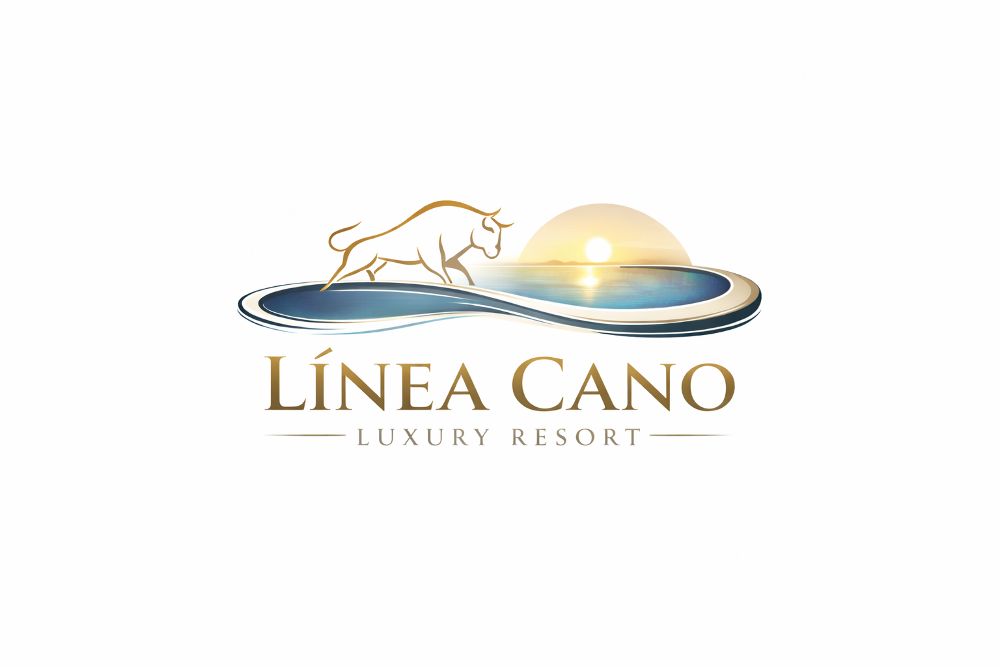

Visita a la cabeza de camada con foco en seleccion genetica y asesoria del matador.
Se presenta como una experiencia de prestigio, respeto y cercania controlada al animal mas simbolico de la finca.
Reservar safari
Reservar visitasLas ganaderias
El ecosistema Linea Cano organiza sus ganaderias como experiencias de alto valor: toro bravo, limusin, iberico y buey. Cada una puede crecer con su propio calendario, disponibilidad y reserva de visita.
Catalogo ganadero
Se presenta como una experiencia de prestigio, respeto y cercania controlada al animal mas simbolico de la finca.
Reservar safariLa montanera debe tener su propia ventana de reserva, relato visual y lectura gastronomica del territorio.
Reservar rutaLa experiencia conecta origen, bienestar animal y futura lectura gastronomica del producto premium.
Ver disponibilidadUna linea singular para visitas especializadas, contenido gourmet y construccion de deseo alrededor del producto.
Ir a carne premium